AnyPortrait > マニュアル > 自動メッシュ生成
自動メッシュ生成
1.3.0
自動的に作業を代わりにしてくれるのは、常に良い話です。
特に、AnyPortraitで最も多くの時間を必要とする作業である「メッシュ作成」を自動化する場合は、ユーザーの作業効率が大幅に高まるでしょう。
このページでは、自動的にメッシュを作成する機能について紹介します。
参考
v1.3.0から新しい自動メッシュ生成機能が適用され、v1.1.0で追加された既存の自動メッシュ生成機能は削除されました。
「Quick Generate」を利用
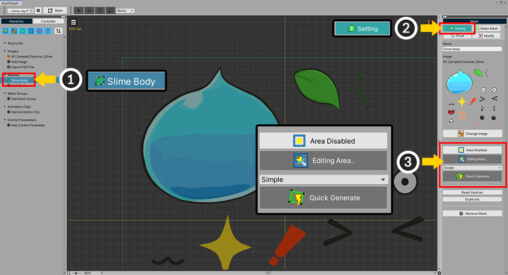
自動的にメッシュを作成する簡単な方法を紹介します。
(1) メッシュを選択します。
(2) 「Setting」タブを選択します。
(3) 自動的にメッシュを生成するためのUIです。

メッシュにするための画像領域をまず設定する必要があります。
(1) 「Area Disabled」状態であれば、ボタンを押して「Area Enabled」状態に変更します。
(2) 「Edit Area」ボタンを押して、「スペースの編集モード」に切り替えます。
(3) 画像の領域を調節することができるポイントが表示されます。
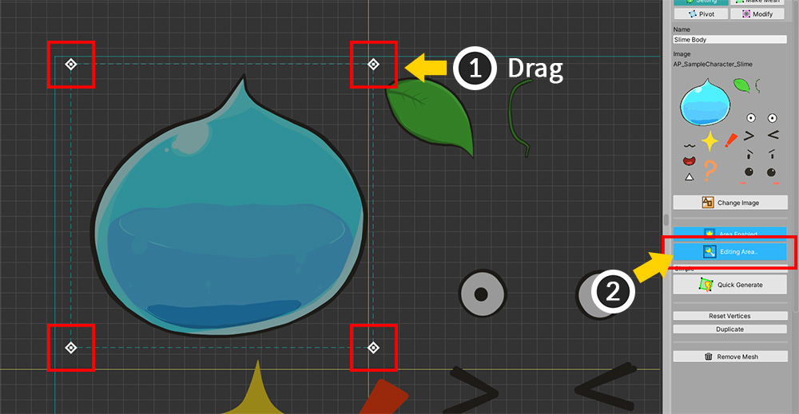
(1) 4つのポイントをドラッグしてサイズを適切に設定します。
不要な画像が領域内に含まれている場合、後のメッシュを編集します。
余裕をもって画像を包み込むように領域を設定してください。
(2) 領域のサイズと位置の両方を設定した場合は、「Editing Area...」ボタンをもう一度押して領域編集を終了してもします。
ただし、「Area Enabled」状態は維持する必要があります。
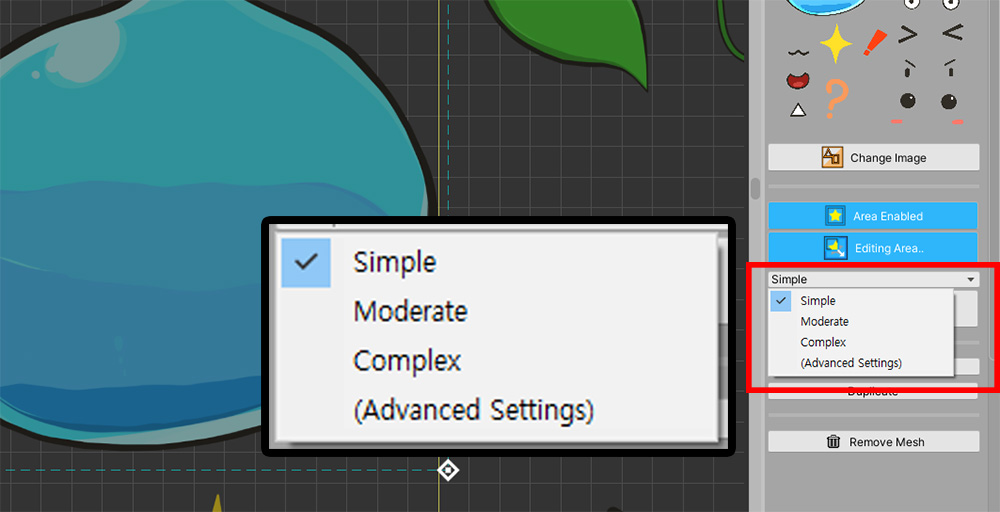
メッシュを生成するためのオプションを選択します。
- 「Simple、Moderate、Complex」オプションは、メッシュに頂点をどのくらい作成するかどうかを決定します。
- 「Advanced Settings」を選択すると、詳細設定画面に切り替わります。
一度「Simple」オプションを選択してみましょう。
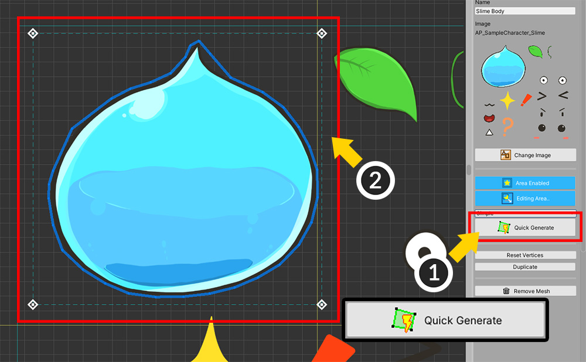
(1) 「Quick Generate」ボタンを押します。
(2) メッシュが生成されたことを見ることができます。

(1) 「Make Mesh」タブを選択すると、(2) 頂点がどのように生成された確認することができます。
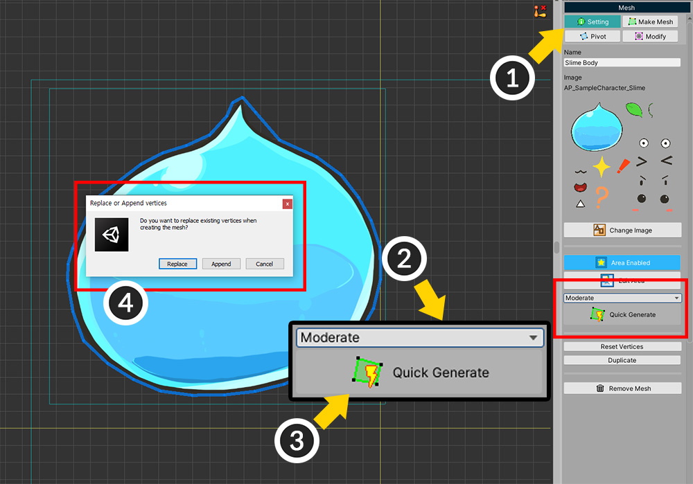
今回は、「Moderate」オプションでメッシュを生成してみましょう。
(1) 再度「Setting」タブを選択します。
(2) 「Moderate」オプションを選択します。
(3) 「Quick Generate」ボタンを押します。
(4) 既存の頂点を削除するかどうかを尋ねるメッセージが表示されます。「Replace」ボタンを押すと、既存の頂点が削除され、新たにメッシュが生成されます。
「Simple」オプションを利用するよりも精巧に画像を認識してメッシュを生成することを見ることができます。

オプションによって頂点がより精巧に作成されます。
Simple、Moderate、Complexの順にメッシュがより精巧に作成されます。
頂点がより多く生成されるほど、画像に合わせてメッシュが生成されるが、その分パフォーマンスが低下する可能性がありますので、適切なオプションを利用して、メッシュを生成してください。
詳細設定を使用して、メッシュを作成
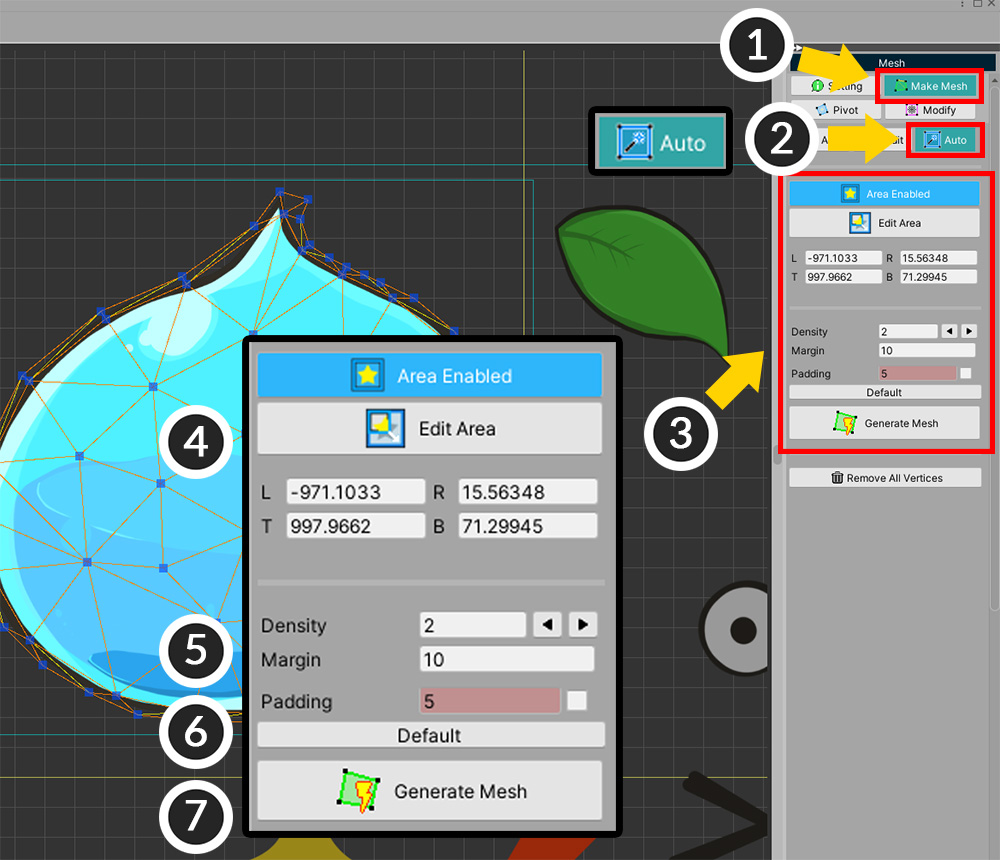
(1) 「Make Mesh」タブを選択します。
(2) 「Auto」タブを選択します。
(3) 自動メッシュ生成のための詳細な設定が表示されます。「Quick Generate」と似ていますもう少し詳細に設定することができます。
(4) 画像の領域に関するオプションです。領域の値を直接入力することができます。
(5) メッシュを生成するための設定です。「Density」、「Margin」、「Padding」があります。
(6) 「Default」ボタンを押すと、自動メッシュ生成オプションが初期化されます。
(7) 「Generate Mesh」ボタンを押すと、設定に合わせてメッシュが生成されます。
メッシュを生成する方法は、「Quick Generate」と同じです。
下の説明で設定値に基づいてメッシュがどのように生成されるかを確認してみてください。
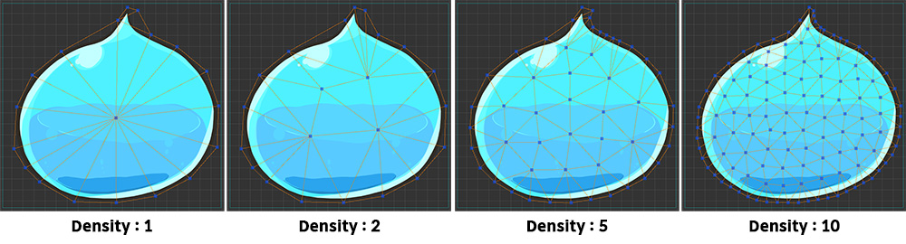
「Density」によるメッシュ生成結果の違いです。
「Density」の値が大きくなるほど頂点が多く生成されます。
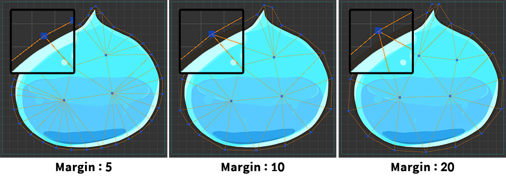
「Margin」は、画像の端から外方向にどのくらいの距離を置いて端頂点を生成するかのオプションです。
値が大きくなるほど距離に頂点が配置されます。
値が小さすぎると、画像の屈曲に応じて過度に頂点が生成されることがあります。
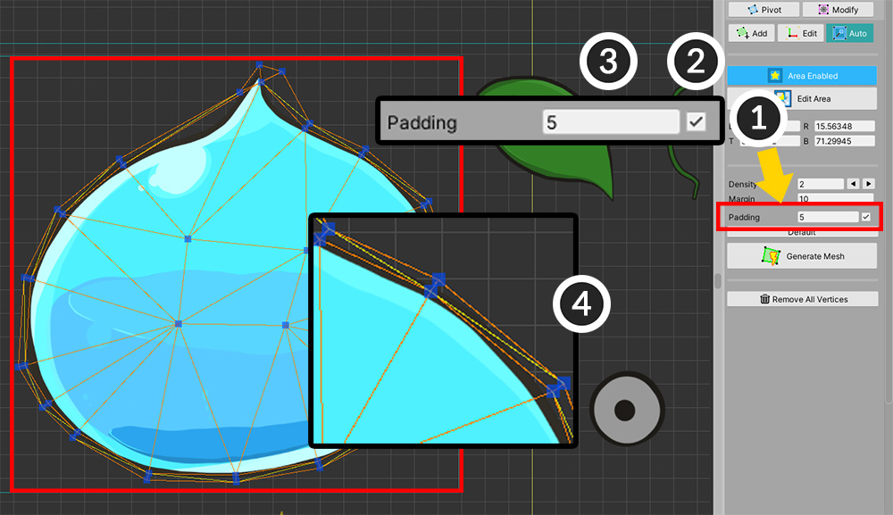
(1) 「Padding」を設定する方法です。
(2) このオプションはデフォルトでオフになってですので、チェックボックスを押してオンにします。
(3) 距離の値を入力します。
(4) メッシュを生成すると、画像の端から内側に頂点が生成されたことを見ることができます。
「Padding」は、「Morph」や「Rigging」によって画像が変形する場合には、画像のエッジで発生する歪みを低減する役割をします。
自動メッシュ生成機能の特徴
v1.3.0での改善された自動メッシュ生成の特徴をいくつか紹介します。
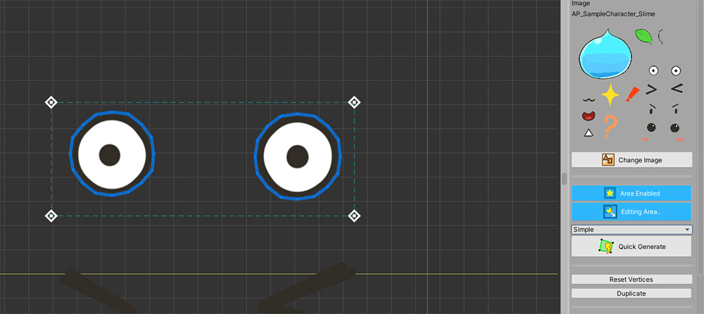
上記のように領域内に分離されている画像がある場合は、それぞれに対して、メッシュのポリゴンが生成されます。
ただし、画像の距離が近いか複雑に配置されている場合は、画像がリンクされたものと認識します。
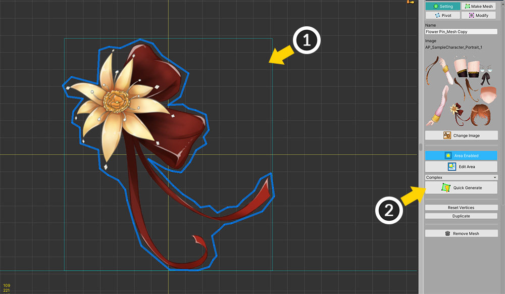
(1) PSDファイルをインポートしてキャラクターを作成すると、デフォルトでは、「画像領域」が設定されている状態です。
(2) したがって、すぐ「Quick Generate」ボタンを押してすぐにメッシュを生成することができます。
生成されたメッシュを修正
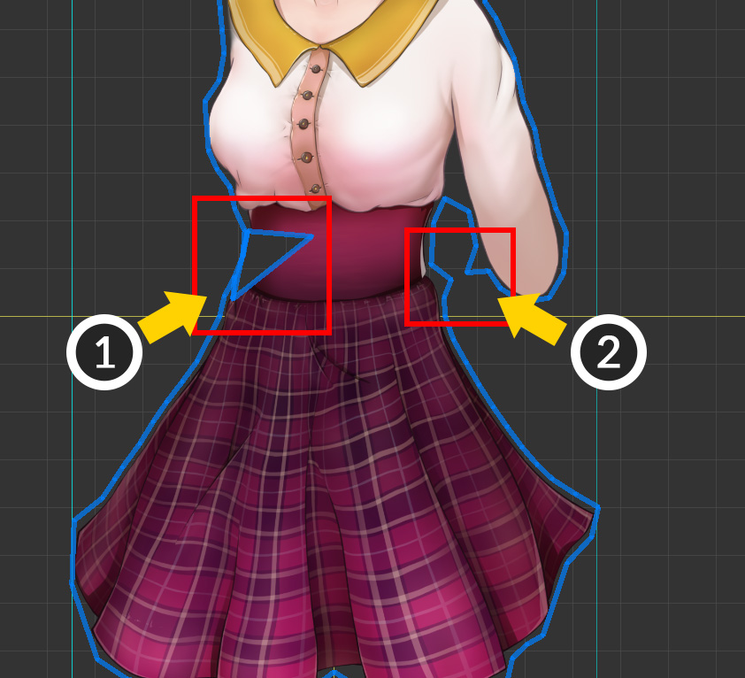
自動的にメッシュを生成する機能は、以前のバージョンよりも効果的で洗練されメッシュを作成することができますが、完全ではありません。
したがって、画像の形や生成オプションによっては、上記のようなエラーが発生する可能性があります。
(1) 内部の頂点が異常に配置されてポリゴンを生成しなかった場合です。
(2) 画像の屈曲を誤って認識して頂点が突出場合です。
このようなエラーを発見した場合、直接メッシュを変更する必要があります。

(1) 「Make Mesh」タブを選択します。
(2) メッシュを編集するためのツールを必要に応じて利用します。
(3) 問題になった部分の頂点を移動、削除、追加して、適切に変更します。
(4) 「Make Polygons」ボタンを押して、メッシュを完成します。
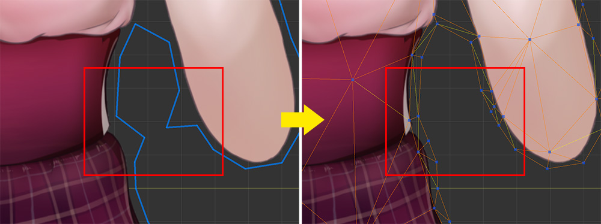
頂点が画像の形を誤って認識した場合にも、同じように修正してあげましょう。